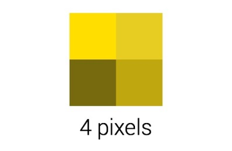
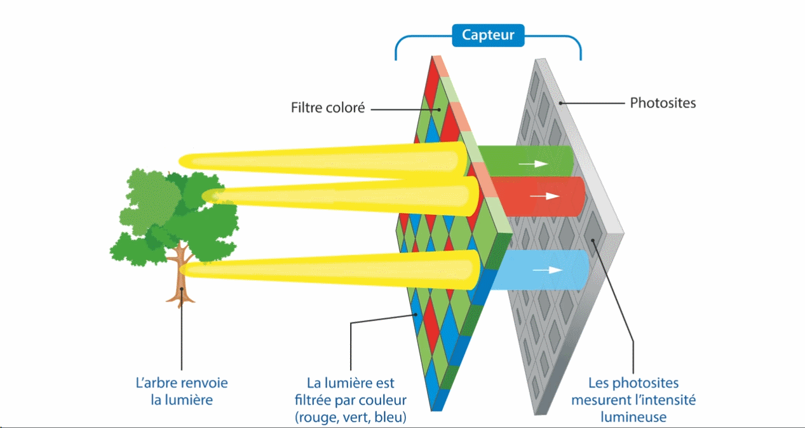
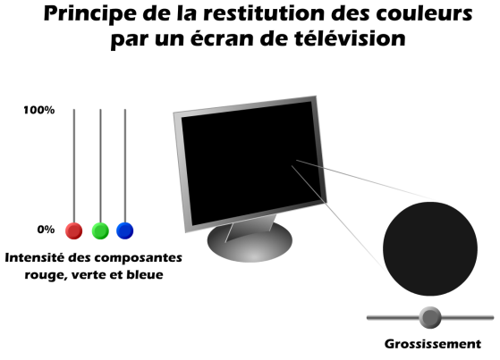
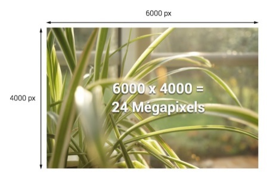
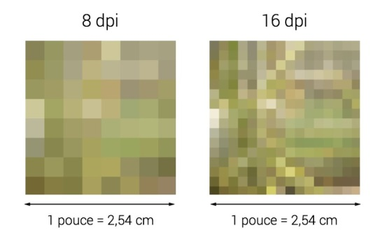

Pixel

Chapitre 7 – Photographie numérique
Consigne : visionne la vidéo, puis complète la frise chronologique : pour chaque date, note l’événement correspondant.
Pour aller plus loin, une vidéo plus complète :
Histoire de la photographieRegarder sur YouTube · nouvel ongletSept événements jalonnent l’histoire de la photographie, de la première image à l’appareil photo du téléphone. Retrouve-les dans l’ordre chronologique.

Le capteur photographique de l’appareil photo est composé de cellules sensibles à la lumière : les photosites. Ces cellules sont recouvertes de filtres colorés ne laissant passer que les rayons d’une seule couleur : rouge, vert ou bleu. Elles mesurent ainsi l’intensité lumineuse des rayons rouges, verts et bleus.
La définition d’un capteur est le nombre total de photosites.

Rédige une explication de la restitution des couleurs par un écran de télévision.
Consulte le site Phototrend – Pixels, définition, résolution et donne la définition des trois mots qui caractérisent une image.



Calcule la résolution d’impression d’une image de 7016 × 4960 px tirée au format A4 (29,7 cm × 21 cm). Conclus sur la qualité d’impression.
Calcule la taille d’impression maximale que l’on peut atteindre avec une résolution optimale (300 dpi) pour une photo prise par un smartphone Samsung Galaxy de définition 4032 × 2268 px.
Pour réviser les notions de la séance :
Résumé : la photographie numériqueRegarder sur YouTube · nouvel onglet